Answer all the questions in the spaces provided.
1. Below is an illustration of a piece of apparatus strategically positioned to trap some organisms.
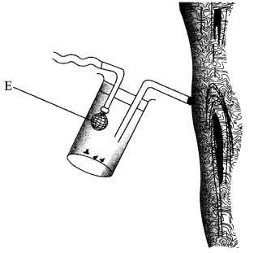
(b) State the function of the part labelled E. (1 mark)
2. Below are diagrams of a cell organelle obtained from different organs of an animal.
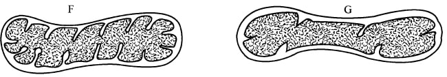
(a) (i) For each organelle state an organ in the urinary system where it is likely to be found. (2 marks)
F
G
(ii) Give a reason for your answers in (a) (i) above (2 marks)
(b) Name the part of the chloroplast where the following reactions occur:
(i) Carbon(IV) oxide fixation (1 mark)
(ii) Photolysis (1 mark)
3. During a practical investigation on food tests, students were provided with the following reagents.
Benedict's solution
Sodium hydrogen carbonate
''' Dilute hydrochloric acid.
(a) Identify the food substance the stu were to test. (1 mark)
(b) State the role of dilute hydrochloric acid and sodium hydrogen carbonate during the experiment.
Dilute hydrochloric acid (1 mark)
(ii) Sodium hydrogen carbonate (1 mark)
4. In an experiment on respiration, a mouse was observed to have inhaled 200 cm3 of oxygen and exhaled 199.75 cm3 of carbon(IV) oxide in ten minutes.
(a) Calculate the respiratory quotient for the activity in the experiment. (2 marks)
(b) Identify the possible food substance consumed by the mouse. (1 mark)
(c) State the fate of the excess food named in (b) above in the human body. (2 marks)
5. The photograph illustrates a housefly at various stages of its development.
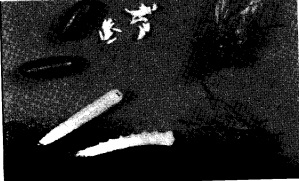
(a) (i) On the photograph, name the stages of the life cycle. (1 mark)
(ii) Using arrows, link the stages of the life cycle in the correct order. (1 mark)
(b) (i) State two differences between the life cycles of a housefly and that of a cockroach. (2 marks)
(ii) State one advantage of the life cycle of a cockroach to itself. (1 mark)
6. Name two enzymes in the human digestive system which are secreted in an inactive form. (2 marks)
7. The diagram below represents a stage in the division of a cell.
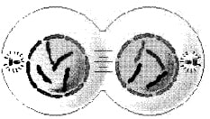
With a reason, identify the organism from which the cell was obtained. (2 marks)
8. Explain why short distance runners breathe quickly and deeply at the end of a race. (2 marks)
9. (a) State the function of a mirror in a light microscope. (1 mark)
(b) Give one reason why the coarse adjustment knob should not be used to lower the high power objective. (1 mark)
10. (a) State the effect of movement of the diaphragm muscles during inhalation in mammals. (3 marks)
(b) State two structural adaptations of leaves that maximise efficiency in gaseous exchange. (2 marks)
11. The set up below illustrates a certain physiological process.
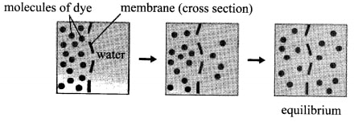
(a) (i) Name the physiological process. (1 mark)
(ii) Give two examples of the process named in (a) (i) above in plants.
(2 marks) (b) State two ways by which the movement of dye molecules in the set up would be slowed down. (2 marks)
12. Explain the survival values of the following tropic responses to plants.
(a) Geotropism (2 marks)
(b) Phototropism. (1 mark)
13. Name the causative agent for Tuberculosis. (1 mark)
14. The photograph below illustrates a germinating seedling.
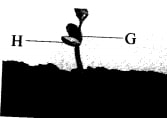
(a) Name the type of germination illustrated in the photograph. (1 mark)
(b) Explain the function of each of the parts labelled G and H.
G (1 mark)
H (1 mark)
15. Explain the physiological process responsible for keeping young seedlings upright. (3 marks)
16. The following are text messages on a cellphone that represent gene mutation.
(a) Identify the type of gene mutation represented in each case
I (1 mark)
II (1 mark)
(b) State Mendel's First Law. (1 mark;
(c) State two disadvantages of genetically modified plant products. (2 marks:
17. How is the surface area increased in the mammalian small intestines? (2 marks)
18. Below are diagrams representing developmental stages of three different vertebrates.
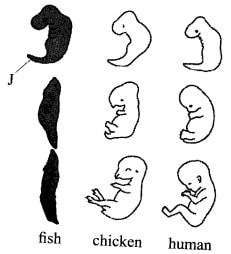
(a) State the evidence of evolution illustrated by the vertebrates in the diagram. (1 mark)
(b) Suggest why the structure labelled J has been retained throughout the evolution of fish.(2 marks)
(c) State two major advantages evolution has given humans over most of the other animals. (2 marks)
19. The table below shows the percentage concentration of certain substances in blood plasma,glomerular filtrate and urine in a human being at a particular time.
(a) Explain the likely impact on the composition of urine in case of the following: (i) Vigorous physical exercises (2 marks)
(b) Name the processes responsible for:
(2 marks)
(i) Presence of glucose in the glomerular filtrate (1 mark)
(ii) absence of glucose in urine ( I mark)
20. State three methods of fossil formation. (3 marks)
21. The photograph below represents a leaf obtained from a certain plant.
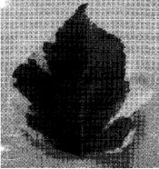
Account for the observations made if the leaf was tested for starch.
22. State two ways by which plants manage their solid wastes. (2 marks)
23. The diagram below represent a set during an experiment
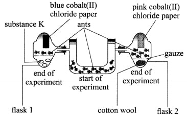
(a) (i) What was, the experiment investigating? (1 mark)
(ii) State the likely identity for substance K (1 mark)
(iii) Explain your answer in (a) (ii) above (1 mark)
(b) Account for the observations made in flask 2. (2 marks)
(a) Name the apparatus. (1 mark)
- Pooter/Aspirator;
- To prevent dirt/insects from entering the suction tube/into the mouth.
(a) (i) For each organelle state an organ in the urinary system where it is likely to be found.
F - Kidney;
G - Bladder/Ureter/Urethra; (2 marks)
Kidney - active re-absorption of solutes requires more energy; organelle F has more cristae for attachment of more respiraton enzymes producing more energy;
Bladder/ureter/urethra - does not require as much energy/ organelle G has less number of cristae hence fewer respiration a enzymes attached/less energy produced;
(i) Carbon(IV) oxide fixation(1 mark)
- Stroma
- Grana/granum
(a) Identify the food substance the students were to test. (1 mark)
- Non reducing sugar
(i)Dilute hydrochloric acid (1 mark)
- To hydrolyze/break down sucrose/ non reducing sugars to reducing sugars/glucose/fructose
- To neutralize the acid
R.Q = CO2 produced/02 consumed
= 199.75/200
Ans = 0.99875
- Carbohydrates/glucose
(c) State the fate of the excess food named in (b) above in the human body. (2 marks).
- Stored in the body as fat/subcutaneous
deposit/adipose tissue
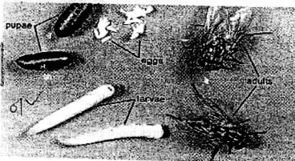
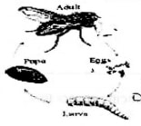
- Eggs have no egg case/ ootheca
- Many/ numerous eggs
- Egg in egg case/ ootheca
- Fewer eggs
- Absence of larva and pupa shortens the life cycle of the organism; - (avoiding adverse/extreme environmental conditions that would affect its growth/general life processes)
- Pepsin (secreted as pepsinogen);
- Trypsin (secreted as trypsinogen);
- Rennin/chymosin (Secreted as Prorennin/Prochymosin;
- Amoeba/ plasmodium reason Constriction of the cell membrane/ presence of centrioles
- To increase the supply of oxygen (in the tissues);
- To offset the "oxygen debt"/halt/manage the accumulation of lactic acid (in the muscles)
- Reflects light (through the condenser) to the object
- Can break the objective lens/cover slip/slide;or
- Can destroy the specimen (making the microscope dirty)
- The diaphragm contracts and flattens; - leading to increase in volume of the thoracic cavity;
- decreasing the pressure inside it, (forcing in the air)
-Thin leaf lining/epidermis for faster diffusion of respiratory ..) gases/ to reduce diffusion distance for respiratory gases;
- Numerous stoma to increase surface area for gaseous exchange;
- loosely packed cells in the spongy mesophyll region/ intercellular air spaces (lower layer) to allow for free movement of respiratory gases
- Diffusion
(ii) - Give two examples of the process named in (a) (i) above in plants. (2 marks)
- Absorption/uptake of mineral ions/salts;
- Lowering the temperature of the medium
(b) State two ways by which the movement of dye molecules in the set up would be slowed down. (2 marks)
- Increasing thickness of the membrane;
- Use less dye/add more water/reducing the concentration gradient
- Enables plants access water/mineral salts;
- Anchorage.
- Exposes plant leaves to light for photosynthesis/for formation of chlorophyl
- Mycobacterium tuberculosis/ Mycobacterium bovis.
- Epigeal
- Elongates to expose the foliage leaves to light photosynthesis.
- Stores food (for growth);
- For photosynthesis (it is green);
- Protects plumule during germination
Osmosis; water moves into the cells becoming turgid; attaining mechanical support ; OWTTE
16.
I - Deletion (1 mark)
II- Inversion (1 mark)
The characteristics /traits of an organism are determined by internal factors/ genes (which occur in pairs).Only one of the genes can be carried in a gamete/ passed onto the next generation.
- Most have lost most of the original (desirable) qualities eg taste;
- Poor/undesirable qualities are perpetuated through subsequent generations;
-Presence of numerous villi/microvilli;
- Being long;
- Being highly coiled18. Below are diagrams representing developmental stages of three different vertebrates. (a) State the evidence of evolution illustrated by the vertebrates in the diagram. (1 mark)- Comparative embryology (b) Suggest why the structure labelled J has been retained throughout the evolution of fish.(2 marks) Fish remained in the aqueous media/ aquatic habitat; well- developed tail/ fin for propulsion/movement; - Ability to rationalize / higher thinking capacity/higher brain activity/advanced brain; -Ability to walk on two's/ bipedal modification of the limbs/ opposable thumbs/upright posture; - Communicate through speech; -Have binocular/stereoscope vision (c) State two major advantages evolution has given humans over most of the other animals. (2 marks)- Comparative embryology 19. (a) Explain the likely impact on the composition of urine in case of the following: (i) Vigorous physical exercises (2 marks) - Less water and urea; since some is excreted/eliminated through the skin (as sweat) (ii)A meal rich in protein - Increased amount of urea in the urine; due to deamination of amino acids (from proteins)(b) Name the processes responsible for:(2 marks) (i) Presence of glucose in the glomerular filtrate (1 mark) - ultra filtration (ii) absence of glucose in urine ( I mark) - Selective reabsorption 20. State three methods of fossil formation. (3 marks) (i) - Petrification/change into rock (ii)- Entire organism or parts preserved; (iii) - Impressions (eg casts/moulds) 21. The photograph below represents a leaf obtained from a certain plant. Account for the observations made if the leaf was tested for starch. - Differences in distribution of chlorophyll/leaf is variegated; green patches would photosynthesize forming starch; giving blue-black colour with iodine solution unlike the regions without chlorophyll 22. State two ways by which plants manage their solid wastes. (2 marks) - Storage in tissues in non-toxic forms; - Deposited in plant tissues/organs- which age and fall off; (eg leaves, bark, fruits, flowers) 23. The diagram below represent a set during an experiment (a) (i) What was, the experiment investigating? (1 mark) - To investigate how ants respond to moisture/water/ hydrotaxis (varied environments with/without moisture/ water) (ii) State the likely identity for substance K (1 mark) - Silica gel/anhydrous calcium chloride pellets/pyrogallic acid/dehydrating/ drying agent (iii) Explain your answer in (a) (ii) above (1 mark) - The colour of cobalt (II) chloride paper remained blue/all the moisture/ water vapour was absorbed/There was no water/moisture in the flask to change the colour of cobalt (II) chloride paper (b) Account for the observations made in flask 2. (2 marks) - (More) ants were attracted/ moved into the flask; due to the presence of moisture/water vapour; (evidenced by the change of cobalt (II) chloride paper to pink)
- Comparative embryology
Fish remained in the aqueous media/ aquatic habitat;
well- developed tail/ fin for propulsion/movement;
- Ability to rationalize / higher thinking capacity/higher brain activity/advanced brain; -Ability to walk on two's/ bipedal modification of the limbs/ opposable thumbs/upright posture;
- Communicate through speech; -Have binocular/stereoscope vision
19.
(a) Explain the likely impact on the composition of urine in case of the following:
(i) Vigorous physical exercises (2 marks)
- Less water and urea; since some is excreted/eliminated through the skin (as sweat)
(ii)A meal rich in protein
- Increased amount of urea in the urine; due to deamination of amino acids (from proteins)
(b) Name the processes responsible for:(2 marks)
- ultra filtration
- Selective reabsorption
(i) - Petrification/change into rock
(ii)- Entire organism or parts preserved;
(iii) - Impressions (eg casts/moulds)
- Differences in distribution of chlorophyll/leaf is variegated; green patches would photosynthesize forming starch; giving blue-black colour with iodine solution unlike the regions without chlorophyll
- Storage in tissues in non-toxic forms;
- Deposited in plant tissues/organs- which age and fall off; (eg leaves, bark, fruits, flowers)
- To investigate how ants respond to moisture/water/ hydrotaxis (varied environments with/without moisture/ water)
- Silica gel/anhydrous calcium chloride pellets/pyrogallic acid/dehydrating/ drying agent
- The colour of cobalt (II) chloride paper remained blue/all the moisture/ water vapour was absorbed/There was no water/moisture in the flask to change the colour of cobalt (II) chloride paper
- (More) ants were attracted/ moved into the flask; due to the presence of moisture/water vapour; (evidenced by the change of cobalt (II) chloride paper to pink)